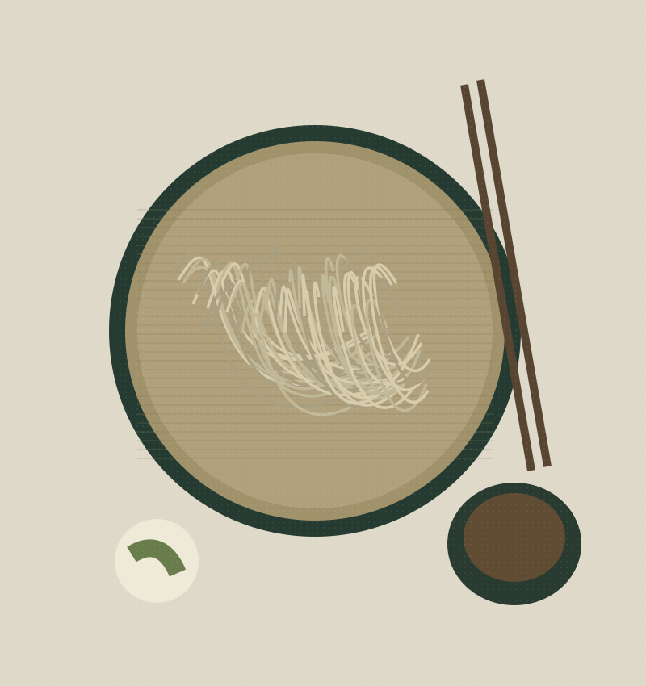
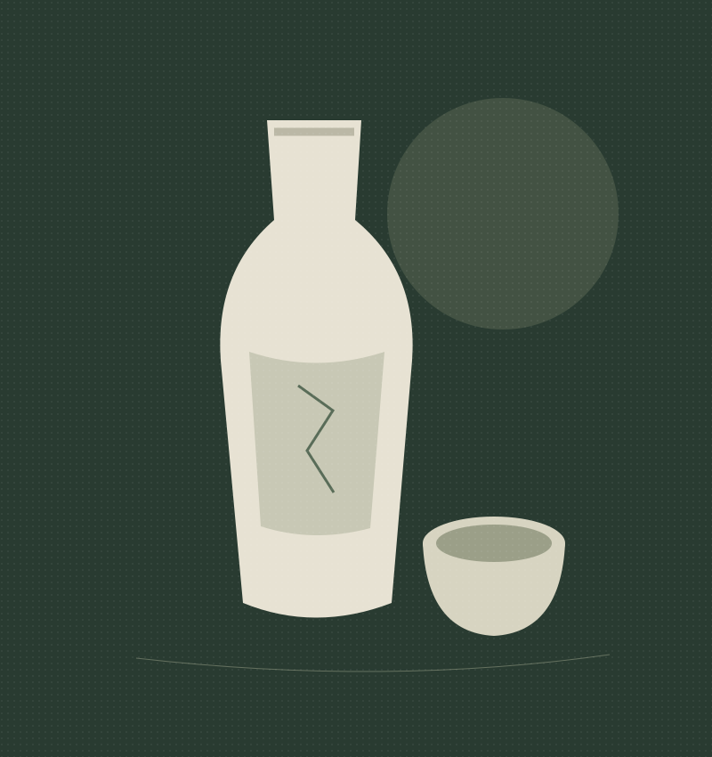

蕎麦と酒
一枚の蕎麦へと続く、ひととき。

LUNCH / 11:30—14:00 L.O.
昼は、蕎麦を味わう。
自家製粉・手打ちの蕎麦を、お食事として。蕎麦だけをご希望の方は、昼の部にお越しください。
もり蕎麦という一枚
久呂無木の細打ちの蕎麦は、冷水で締めた食感から、時間とともに立つ甘みや香りへ。一枚の中で変わる味わいを楽しめます。
蕎麦湯まで、ゆっくりと。
店主のブログでは、注文ごとに作る濃厚な蕎麦湯も紹介しています。蕎麦の後は、つゆに注いで余韻を。
DINNER / 18:00—21:00 L.O.
夜は、蕎麦前を楽しむ。
「蕎麦前」とは、蕎麦を食べる前に、お酒と肴を楽しむこと。久呂無木の夜は、その時間を大切にしています。
各地の日本酒と、一品料理。
日本酒を中心に、焼酎などの諸国地酒をご用意しています。一品料理は、夜の部のみのご提供です。
最後は、蕎麦を一枚。
蕎麦前から〆の蕎麦へ。店主一人で調理しているため、蕎麦のご提供までお時間をいただく場合があります。ゆっくりとお過ごしください。
店主からの夜のご案内（別タブで開きます）
RESERVATION & CONTACT
今夜は、蕎麦屋で一杯。
夜のご予約・お問い合わせは、お電話で。